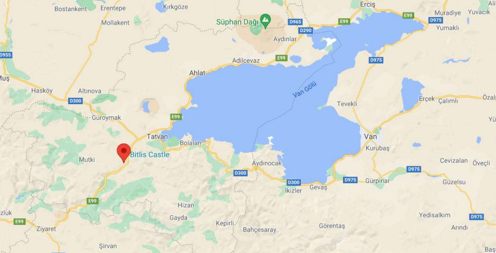

Bitlis
BİTLİS'İN TARİHİ
Tarihçiler Bitlis tarihini değişik zamanlardan başlatmaktadırlar. 5000 yıllık, 7000 yıllık tarih gibi. Gerçekte Bitlis tarihi Neolotik Çağ dediğimiz Yenitaş dönemine kadar uzanmaktadır. Neolitik Çağ, Yenitaş veya Cilalı Taş Devri denilen bu dönem, Ortataş Devri ile Tunç Devri arasındaki arkeolojik dönemdir. Bu dönem M.Ö. 3000 yıllarıyla 9000 yılları arasını kapsamaktadır. Bitlis ve yöresinin yazılı tarih öncesi oldukça karanlıktır. En önemli nedenleri yüzeydeki buluntuların az olması ve bugüne kadar gerçekçi bir arkeolojik çalışma yapılmamasıdır. Bitlis ili sınırları içerisinde bulunan Süphan ve Nemrut dağlarındaki obsidyen (doğal cam yatakları), doğrudan olmasa bile dolaylı olarak bu yöre tarihinin Neolitik dönemine kadar çıktığını göstermektedir. Obsidyen yataklarından elde edilen doğal camın yontucu, kesici, kazıyıcı olarak çevredeki yerleşim yerlerinde kullanıldığı anlaşılmaktadır.
Yine yapılan çalışmalar sonucunda o döneme ait ticaret yolu Van Gölünün doğusundan güneye (bugün ki Van ili sınırları içerisinde bulunan Kalkolitik - Maden Dönemi - yerleşme alanı olan Tilkitepe), batıda ise Diyarbakır il sınırlarına (Ergani yakınındaki çanak-çömleksiz bir Neolitik yerleşme yeri olan Çayönü) dek uzanmaktadır.1 Bitlis ilinin Van ve Diyarbakır arasında yerleşmiş olması, Van'dan Diyarbakır'a yapılacak ticaretin o dönemlerde ancak Bitlis üzerinden yapılacağı dikkate alındığında, Bitlis'in Neolitik dönemden beri yerleşme yeri olduğu bir gerçektir. Neolitik Çağ, M.Ö. 3000 yıllarında sona ermiştir. Bu tarihi baz aldığımızda Bitlis'in 5000 yıllık bir tarihe ve geçmişe sahip olduğunu görmekteyiz. Büyük bir ihtimalle Bitlis'in tarihi bundan daha da eskidir. Güneybatı Asya ülkelerindeki Neolitik Çağ M.Ö. 9000-5000, Avrupa ülkelerindeki Neolitik Çağ M.Ö. 6500, Tuna kıyılarında M.Ö. 5500 olduğuna göre Bitlis'in tarihinin 5000 yıldan fazla olması, 5000 - 7000 yıllık olması çok kuvvetle muhtemeldir.
NÜFUS
Türkiye İstatistik Kurumu'nun (TUİK) verilerine göre, 31 Aralık 2011 tarihi itibariyle Bitlis'in nüfusu 336 bin 624 olarak belirlendi. Toplam nüfusun 175 bin 257'si erkekler, 161 bin 367'si kadınlardan oluşuyor. Belirtilen toplam nüfusun 178 bin 788'i il ve ilçede, kalan 157 bin 836 kişi ise belde ve köylerde ikamet ediyor. Bitlis nüfusunun il ve ilçelere dağılımıysa şöyle: "Bitlis Merkez 65 bin 670, Adilcevaz 31 bin 746, Ahlat 36 bin 577, Güroymak 45 bin 38, Hizan 39 bin 563, Mutki 34 bin 240,Tatvan 83 bin 790."
BİTLİS'İN DOĞAL GÜZELLİKLERİ
Bitlis tarihi bakımdan çok zengin bir geçmişe sahiptir. Bitlis’de geçmişten günümüze birçok kaleler, camiler, kiliseler, ören yerleri, antik kentleri ve daha birçok tarihi yapılar mevcut. Bitlis’in bütün bu tarihi güzellikler bir bir görülmesi gereken yerlerdir ve keşke görebilsek. Ama bütün bunların dışında bir de Bitlis’in kendine özgü, fiziki şartlarından, bitki örtüsünden ve ikliminden kaynaklanan birçok doğal güzellikleri de bulunmakta. Bunlar genellikle yaylalar, şelaleler, göller, nehirler, dağlar ve daha neler neler…
VAN GÖLÜ
Dünya’da görebileceğiniz sayılı doğal güzelliklerden, Türkiye’nin ise en güzel göllerinden biri olan Van Gölü, ülkenin en büyük gölü olması özelliğiyle tanınıyor. Uzun yıllar boyunca Van Gölü Canavarı gibi efsanevi konularla da gündeme gelen göl, 120 km uzunluğu ve 80 km genişliğiyle Van Denizi olarak da anılıyor.

Van ve Bitlis sınırları ilçesinde yer alan göl, Bitlis’in Tatvan ilçesinin kıyı şeridinde bulunuyor. Nemrut Dağı’nın volkanik patlaması sonucu oluştuğu düşünülen Van Gölü, binlerce yıldır insanlara görsel şölen sunmaya devam ediyor. Tatvan ilçesine geldiğinizde karşılaşacağınız bu doğa harikası, Urartu Krallığı’nın tarihi izlerinden, pek çok kilise ve manastıra kadar tarihi yapılara da ev sahipliği yapıyor. Bitlis ve Vanlılar tarafından gölün bazı kısımları yaz aylarında plaj olarak da kullanılıyor. Van Gölü’ne geldiğinizde harika bir keşif turuna çıkabilir, tablodan fırlamış gibi gözüken bu gölün birbirinden güzel fotoğraflarını çekebilirsiniz.
ARİN GÖLÜ
Bitlis’te yer alan bir diğer göl de, şehrin Adilcevaz ilçesinde yer alan Arin Gölü. Kuş cenneti olarak da kabul edilen göl, Van Gölü’nün hemen arka kısmında, Süphan Dağı’nın eteğinde yer alıyor. Van Gölü’nün 5 metre daha yüksek olduğu zamanlardan kalma olduğu tahmin edilen bu göl, bölgenin önemli göllerinden birisi.
Adilcevaz ilçesinden kolayca ulaşabileceğiniz göle, kuş cenneti denmesinin nedeni ise 200’e yakın birbirinden güzel kuşa yaşam alanı oluşturması. Boz ördekten, Dikkuyruk cinsine kadar pek çok kuş türünü gözlemleyebileceğiniz gölde, balık tutabilir, doğanın güzelliğine bir kez daha hayran kalabilirsiniz.
SÜPHAN DAĞI
Bitlis’in 4058 metrelik rakımıyla, en çok bilinen volkanik dağlarından biri olan Süphan Dağı şehri çevreleyen oldukça etkili bir doğal varlık. Kente geldiğinizde dahi tepesinde çoğu zaman kar olan dağı gördüğünüzde etkileneceğinizi düşündüğümüz Süphan Dağı, genelde dağ sporu tutkunlarının gelmekten en keyif aldığı dağlardan birisi.
AYGIR GÖLÜ
Bitlis’in doğa harikası göllerinden bir diğeri de, Bitlis şehir merkezine 1 saatlik mesafede bulunan Adilcevaz ilçesinde yer alıyor. Van Gölü kenarında yer alan Adilcevaz’ın arkasında yer alan Süphan Dağı’nın eteğindeki göl, ilçeye 10 km kadar yakın bir mesafede.
Oldukça kolay ulaşılabilir bir noktada ve temiz bir yol üzerinde yer alan göle, aracınızla kolaylıkla gidebilirsiniz. Bitlis’in volkanik oluşum göllerinden biri olan Aygır Gölü, sodalı göl olarak da biliniyor.